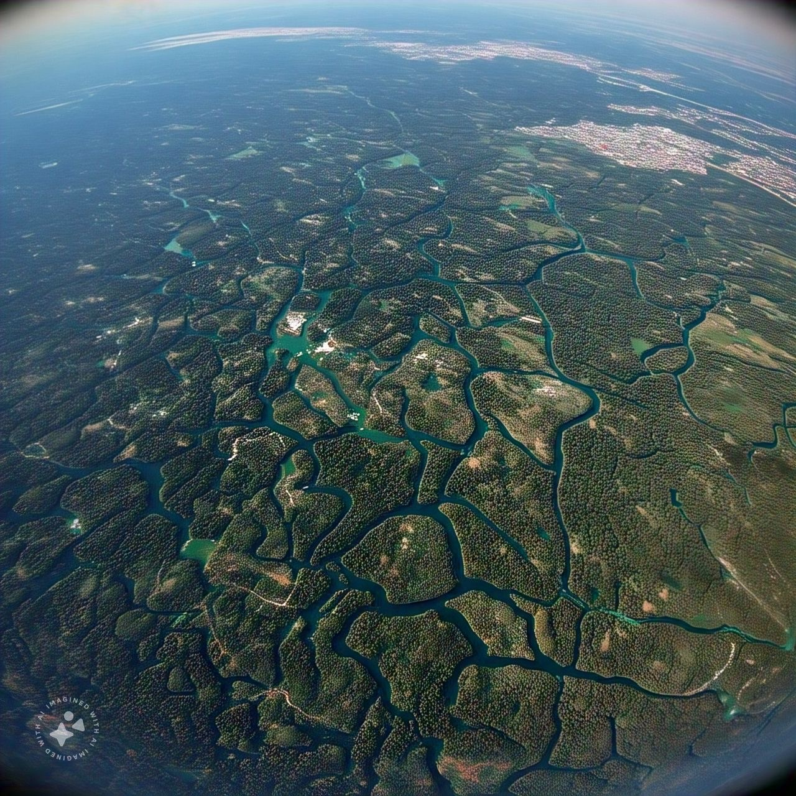

Mapping Forest Non Forest area for carbon Projects
Project Overview

The mapping of forest and non-forest areas is essential for assessing the environmental impact of projects aimed at combating climate change, particularly in initiatives such as REDD (Reducing Emissions from Deforestation and Forest Degradation) and ARR (Afforestation, Reforestation, and Restoration). These projects rely on accurate and up-to-date data to monitor forest cover changes and evaluate carbon sequestration potential.
Through various initiatives, we have contributed to projects that involve forest and land cover mapping as a key component. These activities have supported carbon credit verification, emission reduction assessments, and the design of forest conservation strategies. By utilizing supervised classification techniques, we generate forest cover data using platforms like Google Earth Engine, as well as specialized software such as ENVI and ArcGIS Pro. These tools enable us to analyze large-scale satellite imagery, classify land cover types, and accurately map areas affected by deforestation, degradation, or restoration.
To achieve this, we rely on freely available satellite data, primarily from Landsat and Sentinel missions, which provide high-quality, multi-temporal images crucial for the monitoring of land use and forest cover changes over time. These datasets, combined with advanced classification methodologies, allow us to produce reliable and cost-effective maps that are vital for tracking the success of carbon projects and ensuring transparency in emissions reductions.
Methodology
We employed satellite imagery and geospatial data analysis techniques to mapping Forest Areas. The key steps in the project include:
- Data Collection: Gather satellite imagery from Landsat and Sentinel missions, along with auxiliary data like DEM and climate data.
- Preprocessing and Data Preparation: Apply radiometric, atmospheric, and geometric corrections to the images for consistency.
- Supervised Classification: Use training samples and classification algorithms (e.g., Random Forest, SVM) to identify forest and non-forest areas.
- Forest and Non-Forest Classification: Classify the imagery into forest and non-forest categories based on spectral and temporal features.
- Validation and Accuracy Assessment: Compare the classified map with ground truth data and calculate accuracy metrics (e.g., confusion matrix).
- Post-processing and Refinement: Refine the classification by correcting misclassifications and applying filtering techniques.
- Monitoring and Change Detection: Conduct periodic classification and use change detection to identify deforestation or reforestation.
- Reporting and Decision Support: Compile the results into reports for stakeholders to support decision-making and project evaluation.
Results & Impact
As a result of this project, several forest regions have been identified and mapped. The key outcomes include:
- Accurate Carbon Project Monitoring: Enables precise tracking of forest and non-forest areas, crucial for REDD+ and ARR project impact assessment.
- Efficient Data Processing: Leverages freely available satellite data (Landsat, Sentinel) with advanced classification techniques for scalable and timely analysis.
- Enhanced Decision-Making: Supports informed policy and resource management decisions, optimizing strategies to combat climate change.
Project Gallery
The following interactive map allows the user to draw an area of interest, automatically generating a land cover classification for the Sentinel scene with the least cloud cover available for January 2024.